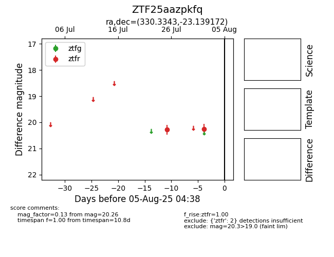

Target ZTF25aazpkfq at 2025-08-05 04:38, see:
FINK: fink-portal.org/ZTF25aazpkfq
Lasair: lasair-ztf.lsst.ac.uk/objects/ZTF25aazpkfq
ALeRCE: alerce.online/object/ZTF25aazpkfq
alt names
ZTF25aazpkfq (ztf,fink)
coordinates:
equatorial (ra, dec) = (330.3343,-23.13917)
galactic (l, b) = (29.1837,-51.47391)
photometry
last ztfr=20.26
2 ztfr detections
